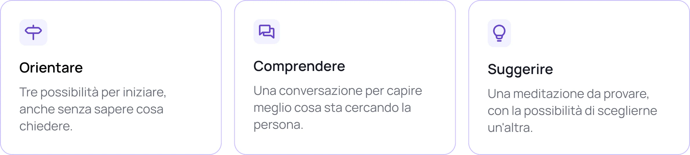
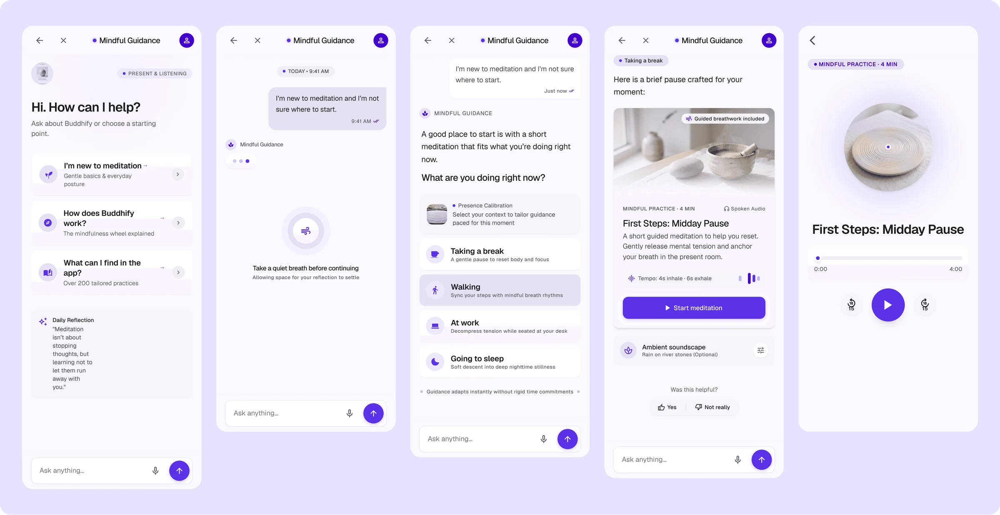
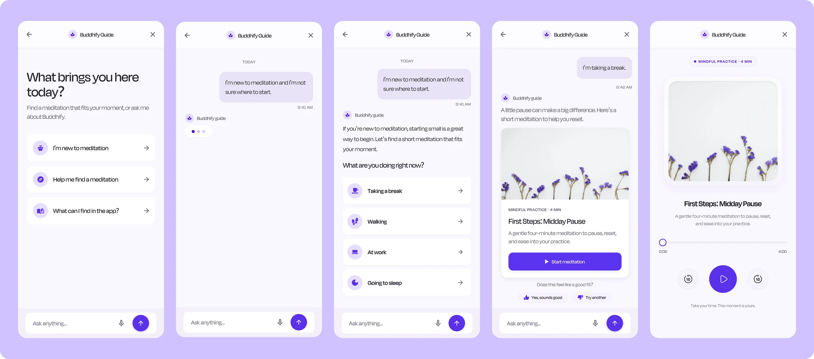

Brand
Meditare, anche nella vita di tutti i giorni
Buddhify è un'app che propone meditazioni per diversi momenti della giornata: mentre cammini, durante una pausa o quando senti il bisogno di fermarti. Non serve seguire una routine, puoi scegliere una pratica in base a quello che stai facendo o a come ti senti.
Ho scelto di concentrarmi su chi usa Buddhify per la prima volta, quando non conosci ancora l'app e hai bisogno di capire da dove iniziare.
Problema
Quando non sai da dove iniziare
Buddhify offre tante meditazioni diverse, ma non è detto che chi apre l'app sappia già cosa cercare.
Magari hai sentito parlare di meditazione e vuoi provare, ma non sai bene come funziona. Oppure vuoi rilassarti, prenderti una pausa o semplicemente capire cosa puoi trovare nell'app.
Mi sono concentrata proprio su questo primo momento. Prima ancora di scegliere una meditazione, una persona potrebbe aver bisogno di fare qualche domanda.
Soluzione
Prima capire, poi suggerire
Da qui è nata l'idea di Buddhify Guide: un assistente a cui puoi fare domande sulla meditazione, chiedere cosa trovi nell'app oppure farti aiutare a scegliere una pratica.
Non volevo che fosse necessario conoscere già Buddhify per usare l'assistente. Per questo la conversazione parte da tre possibilità: scoprire la meditazione, trovare una pratica oppure esplorare l'app.
Da lì puoi continuare a parlare con l'assistente, che ti fa qualche domanda quando serve e ti accompagna verso quello che stai cercando.

Interazione
E se bastasse chiedere?
Per prima cosa volevo che l'assistente fosse facile da trovare. Ho aggiunto “Need some guidance?” direttamente nell'interfaccia originale di Buddhify.
Da lì si apre la chat, con alcune domande suggerite per chi non sa da dove iniziare. Chi preferisce può invece scrivere liberamente o usare la voce.
Le domande sono pensate per accompagnare anche chi non conosce ancora l'app, senza obbligarlo a sapere già cosa cercare.
Processo
Dalle prime idee alle schermate
Ho iniziato da una cosa che nelle schermate ancora non si vedeva: la conversazione.
Con ChatGPT ho provato a costruire possibili domande e risposte, immaginando cosa avrebbe potuto chiedere una persona che non conosce la meditazione o Buddhify.
Poi ho utilizzato Stitch per dare una forma a queste idee e ottenere cinque prime schermate.

Vedere le prime schermate mi ha aiutata a capire come avrebbe funzionato l'assistente nell'interfaccia, non solo cosa avrebbe dovuto dire.
C'era però una cosa che non mi convinceva: la chat si apriva con “Hi. How can I help?”. Una domanda generica che, per chi non conosce la meditazione, poteva rendere difficile capire da dove iniziare.
In Figma l'ho sostituita con “What brings you here today?” e ho aggiunto tre possibilità da cui partire. Volevo che la schermata iniziale offrisse già un primo orientamento, senza chiedere all'utente di formulare subito una domanda.
Ho poi rivisto i contenuti e i passaggi della conversazione, completando il percorso fino al player, con gli stati di riproduzione, pausa e fine della meditazione.

L'AI fa le schermate. E poi?
Con ChatGPT e Stitch sono riuscita a trasformare le prime idee in schermate in poco tempo. Vedere qualcosa di concreto mi ha aiutata a capire meglio cosa volevo realizzare, ma anche cosa non mi convinceva.
Mi sono accorta che il lavoro non finiva quando l'AI generava una proposta. Anzi, da lì iniziava la parte in cui dovevo scegliere cosa tenere, cosa cambiare e come far funzionare tutto insieme.
È stata proprio questa la parte che mi è piaciuta di più: prendere quelle prime schermate e lavorarci sopra fino ad arrivare a qualcosa che sentissi davvero mio.
L'AI mi ha aiutata a partire, ma sono state le scelte successive a dare forma a Buddhify Guide.
A mente fredda
Prossimi passi
Più ricerca sugli utenti
Mi piacerebbe osservare qualcuno che non conosce Buddhify mentre usa l'assistente. Ho immaginato quali potessero essere i suoi dubbi, ma vorrei capire se sono davvero quelli che una persona ha quando apre l'app per la prima volta.
L'effettiva utilità dell'assistente
Vorrei confrontare due esperienze: cercare una meditazione nell'app e farlo attraverso l'assistente. Non è detto che parlare con un'AI sia sempre il modo più semplice per trovare ciò che si cerca.
Gli imprevisti della conversazione
Nel prototipo ho immaginato alcuni percorsi, ma difficilmente una conversazione segue sempre quelli previsti. Mi piacerebbe lavorare anche sui momenti in cui l'assistente non capisce una richiesta o suggerisce qualcosa di poco adatto.
Nuove consapevolezze
Il peso delle parole
Non pensavo che la domanda iniziale della chat avrebbe richiesto così tanta attenzione. Ripensarla mi ha fatto capire quanto anche poche parole possano cambiare il modo in cui una persona si avvicina a un servizio.
Progettare oltre le schermate
Partire dalla conversazione, anziché dall'interfaccia, mi ha aiutata a concentrarmi su quello che la persona avrebbe dovuto fare e capire durante il percorso. È un approccio che vorrei sperimentare anche in altri progetti.
Non perdere di vista il bisogno iniziale
Progettando la chat era facile concentrarsi sulla conversazione stessa. Completare il percorso fino al player mi ha ricordato perché avevo immaginato l'assistente: aiutare qualcuno a trovare una meditazione da cui iniziare.